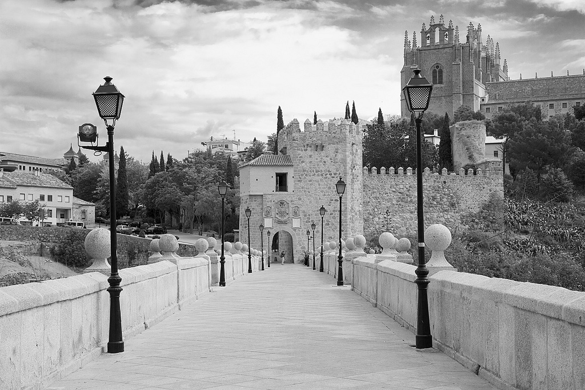

Nie zapomnieć o Tobie
Żyjemy zwyczajnie, gdy stulecie mija… Wiele osiągnęliśmy, stworzyliśmy, ukształtowaliśmy. A jednak rozkwita w nas tęsknota, za wszystkim, co zwie się prawdziwym życiem. Życiem w poczuciu harmonii, zgody z samym sobą i całkowitego spełnienia… Dręczy nas wewnętrzna myśl, dlaczego chcę tak naprawdę więcej, dlaczego chcę inaczej?
Podczas pobytu w hiszpańskim Toledo Rilke pewnej nocy dostrzegł na nieboskłonie spadającą gwiazdę. Jej wspomnienie miało powrócić po latach w końcowym fragmencie wiersza „Śmierć”:
O gwiazdo spadająca,
pewnego razu z mostu wypatrzona —
Nie zapomnieć o tobie. Stać!
Zanurzeni w codzienności, poddani przyzwyczajeniom, targani sprzecznościami nie możemy zapomnieć idei, które nas niegdyś olśniły. I nadal olśniewają. Przeszyły nasz własny wewnętrzny nieboskłon. I wciąż przypominają o tym, co tak naprawdę w życiu istotne. A osobom, które nie pozwalają nam o tym zapomnieć, winniśmy dozgonną wdzięczność.